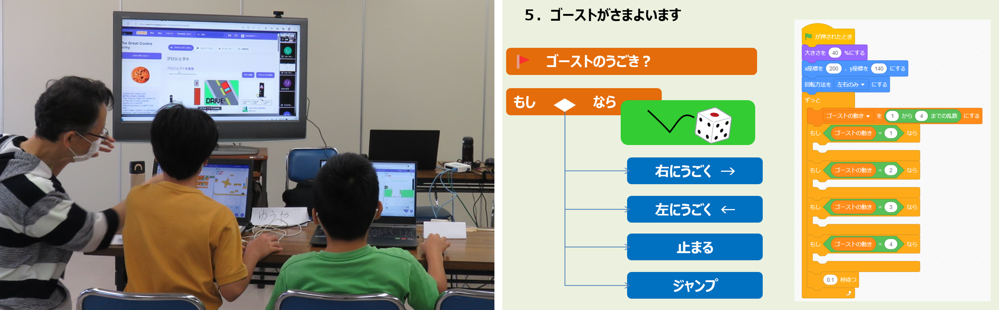

2023/09/24 午前と午後の２回開催
第56,57回 なんとニンジャ30名参加。
初級プログラミング＆ラズタンクチューニング
午前のScratch共通テーマで初級プログラミングは「くものアスレチック続編となるゴースト編」をみんなで制作。午後はタイムラプス・カメラ連続撮影だったけど座学で終わってごめんなさい。そこはそれ子どもたちは12月の競争目指しチューンアップに取り組みました。
本日の青梅Dojo出欠確認です
ニンジャの申し込みは午前23名・午後7名の延べ30名。保護者家族14名、メンター7名のなんと延べ51名が参加してくれました。
２つの会議室を連結している広さですが、そろそろ満席になりそうです。
最初はオリエン。今日のテーマと参加者を紹介します。

午前ワークショップ（Scratchプログラミング入門・初級）
午前はレベル別に４ブロックに分かれてワークショップを行います。
１．はじめて参加するニンジャ向け入門プログラミング
中学生ユースメンターのはやと君は、入門コースのベテラン講師です。今日は３人の新人ニンジャに「くものアスレチック」を伝授してくれました。
２．みんなで同じScratchテーマによる初級プログラミング講座
今月は入門コース続編の「続・くものアスレチック・ゴースト編」制作にチャレンジ。ゴーストが自動でさまようロジックを考えます。

３．自分でテーマを決めてがんばる初中級プログラミング
今月はScratchでの作品に加えて、micro:bitで自動走行カーの開発をするニンジャも参戦。保護者も子どもたちと一緒に考えてくれています。

４．オンラインも同時開催。
会場のみんなも、オンラインの発表を聞くことができます。会場とオンラインとのコラボは改善を検討したいので Bluetoothマイク/スピーカー探そうかな

午後ワークショップ（ラズパイと電子工作）
みんなで開発しているラズタンクをチューニングや改造をして競争することにしました。CoderDojo青梅カップ2023は、選手入場用の坂道登頂からはじまり、遠隔リモート操作競争、障害物競争の３種目競技を検討しています。
青梅カップ2023のレギュレーションを説明しています。ニンジャから許容される改造を質問されています。
大会目指して、ラズタンクを改造・チューニングするぞ
しかーし。何回か欠席してたり、自宅からも移動中に壊したり、みんなの進捗にバラつきが目立ってきました。どうしようか、みんな。
前回は使えたラズパイカメラがエラー、漆畑メンターがカメラ交換しての切り分けテストを提案。大当たり、カメラモジュールが故障していた可能性あり。モータードライバ回路の配線が抜けてしまい、やり直しするタンク車両も続出。続々とピットイン。
次回は10月08日(日)開催です。
Connpassでイベント告知するので、またの参加をお待ちしています。参加申し込みはこちらのConnpassから
CoderDojo青梅にご質問メールはこちら
😃